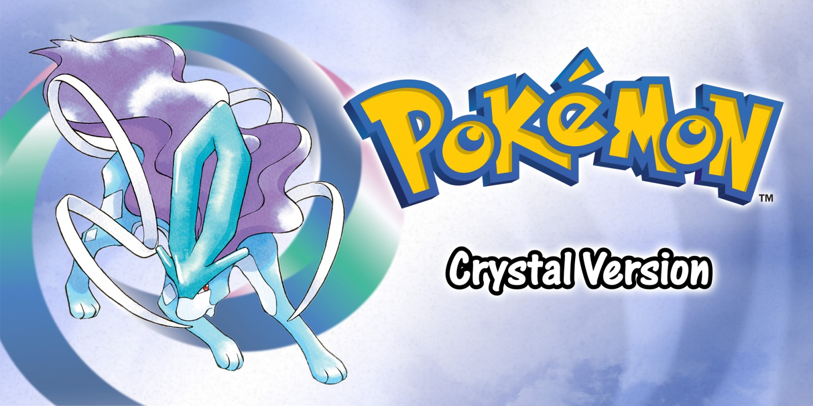
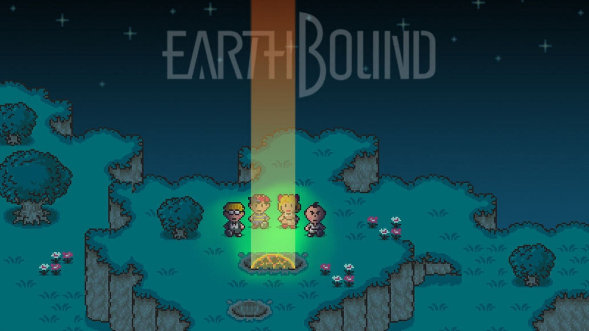

Super Metroid

super metroid constantly stuns the player with its smooth 16 bit graphics. the game is designed to make the player feel like theyre outsmarting the game, however its all very dileberate. however, when completing these feats the player feels rewarded.even with these challenges the difficulty is always fair. With the golden ration of all these elements, it is only fair to give this title the rating of:
Rating: 5/5
Pokemon Crystal
Pokemon Crystal is a delightful RPG that can suck up all of your free time. wheather its collecting them all(pokemon), battling traines, gym leaders, or the elite four, this game has something for all RPG fans. With all of this, you would expect that this is the end. NO! The game includes the entire postgame olf the previous games, red and blue. overall, this title recieves a:
Rating: 4.6/5
Earthbound
earthbound is a splendid RPG action game with quirky text and amazing 16 bit visuals. with its rolling health mechanic, this game gets a whole new layer with its combat system. with its combined elements of story, combat , visual style, this game is a classic and wil get a: